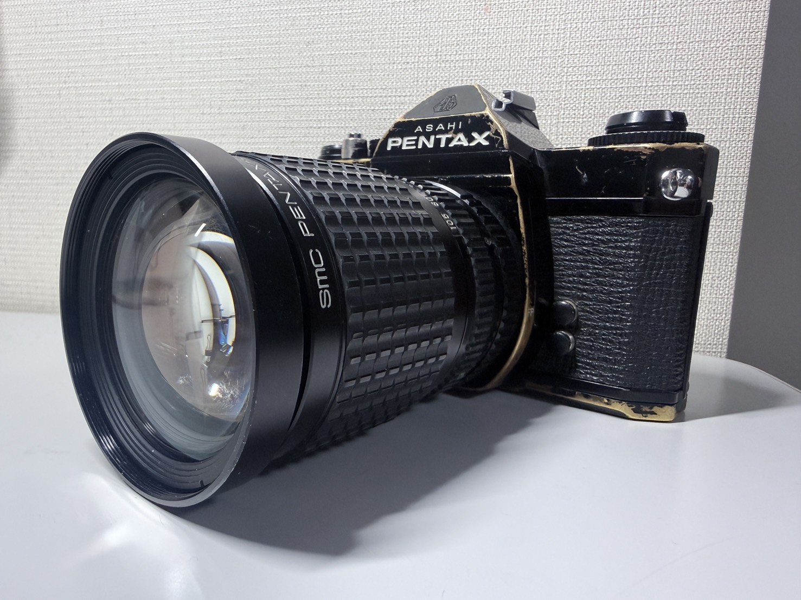
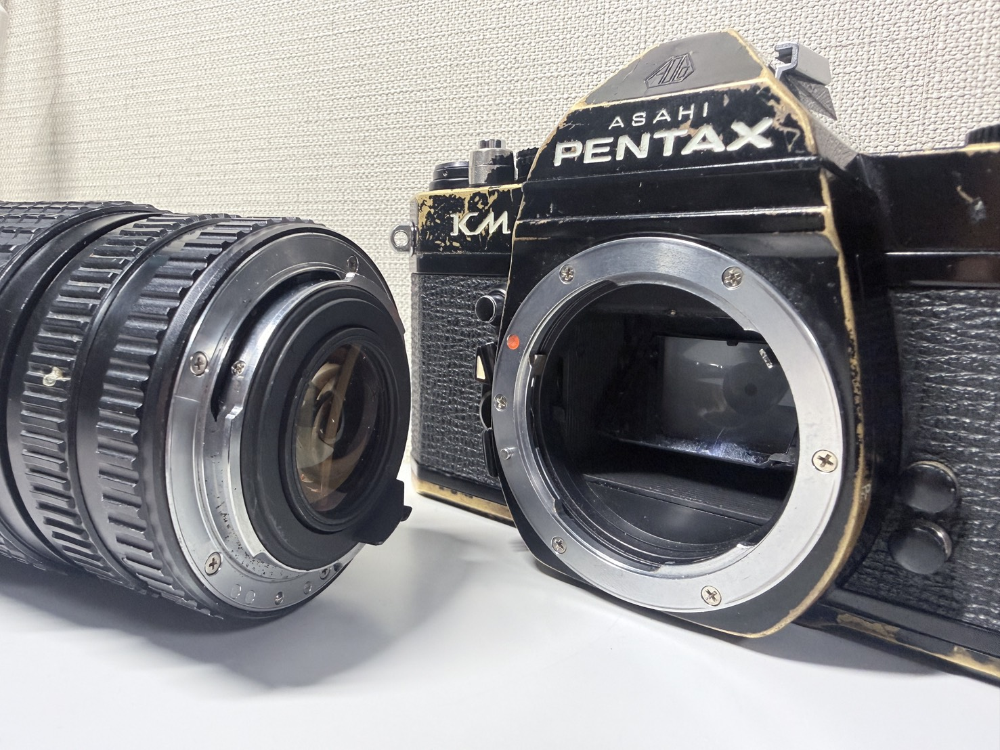
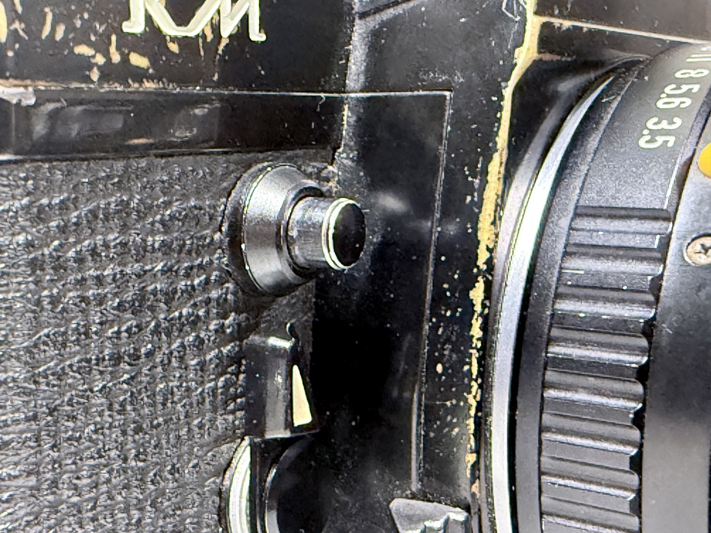
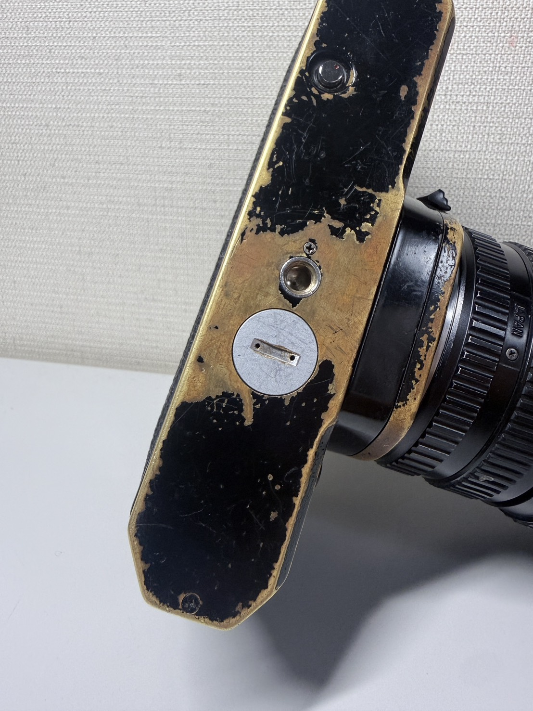
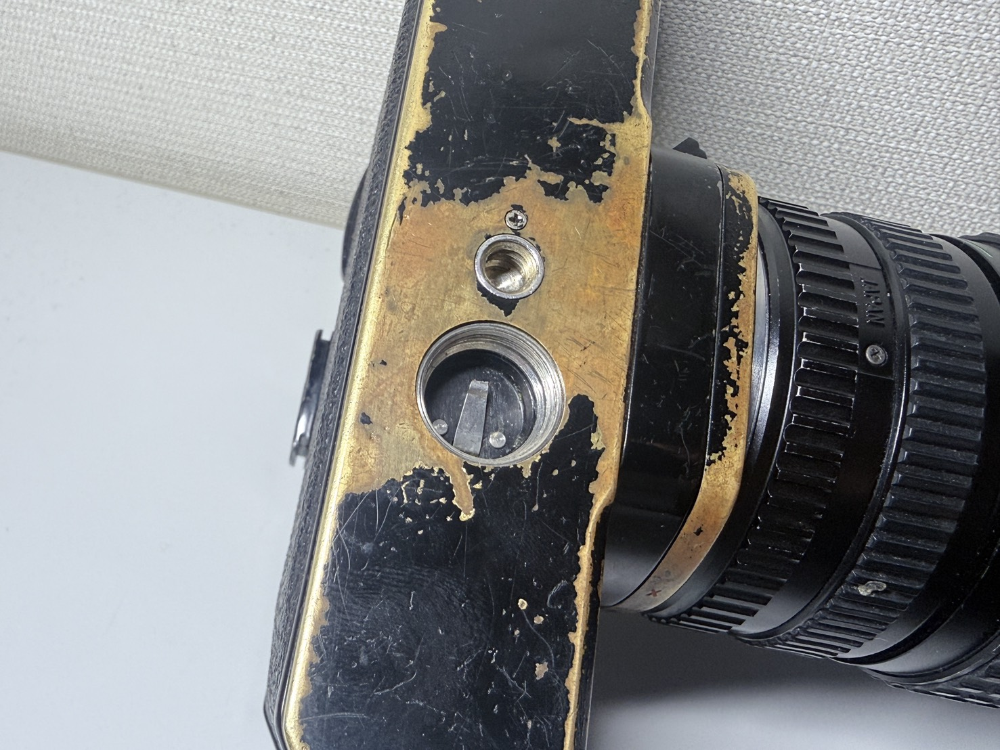
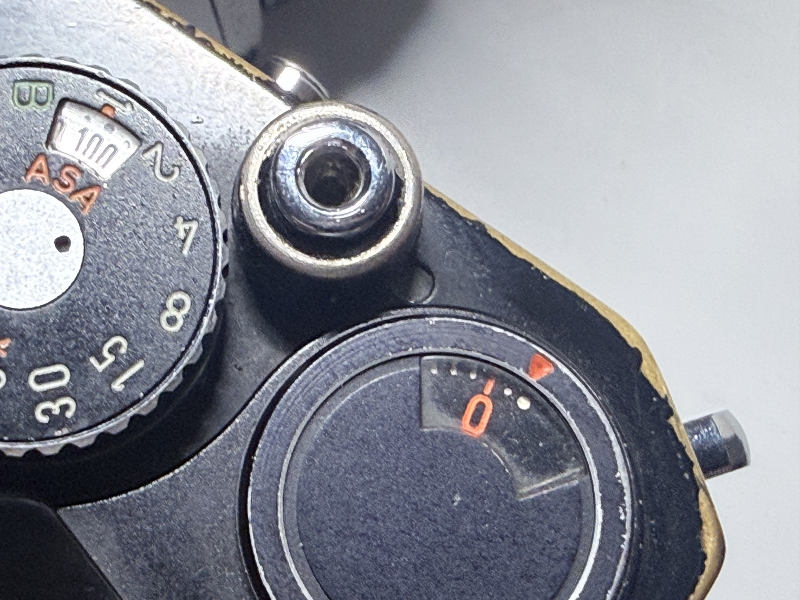
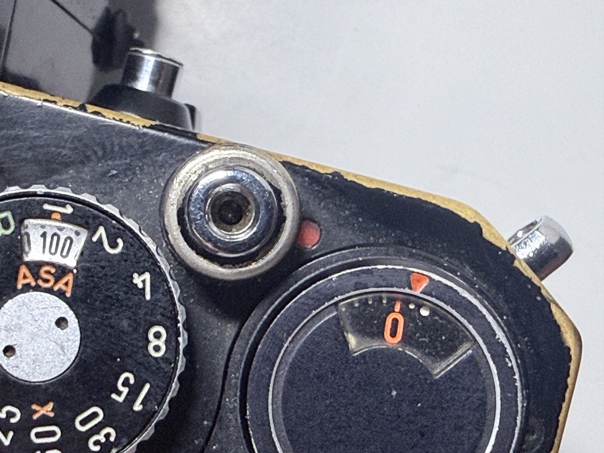
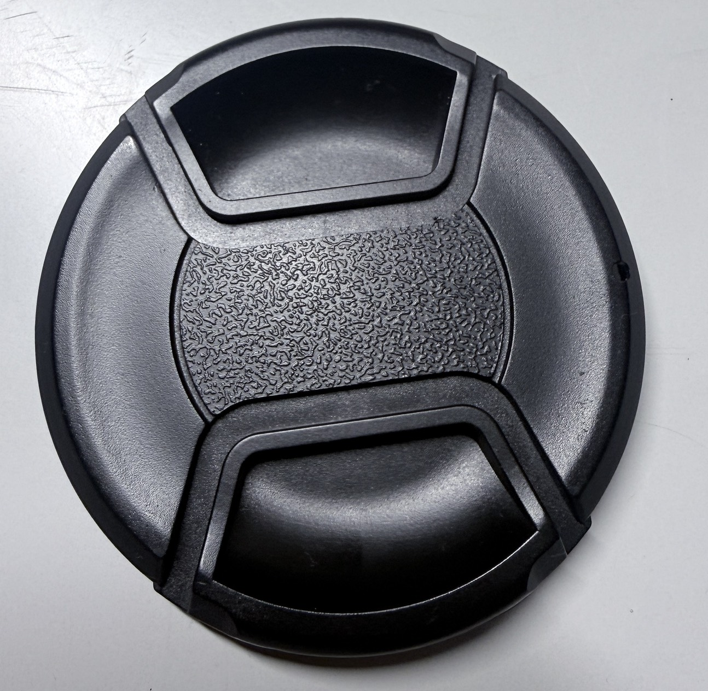

【PENTAX KM】
【思わず食指が動いてしまった】

基本情報
| メーカー | 【PENTAX】 |
|---|---|
| 機種名 | 【PENTAX KM】 |
| 発売年 | 【1975年】 |
| 使用フィルム | 【35mmフィルム】 |
| 撮影方式 | 【35mmフィルム一眼レフ】 |
| レンズマウント | 【Kマウント】 |
| シャッター | 【機械式・B‐1秒～1/1000秒（X接点は1/60）】 |
| 露出 | 【TTL開放測光の定点合致式】 |
外観

ざっとみると結構剥げてたりするけど・・・そこがいい！かっこいい！最高！
(元々、買った理由に見た目が大きいですからね。まぁ惹かれたのはシルバーのほうなんですが。)
特徴
このカメラは・・・、FTとかなり似た感じの[普通であること]みたいな感じですね。
特段の不満も特段の良ポイントもあるわけじゃなくだた普通に使えるって感じです。
あとはこのKM、全く同じタイミングでKMとK2ってカメラが出たんですけど、これか機種からか
レンズマウントが[Kマウント]に変更されました。このレンズ規格は今も使えるのはお得っすね。

スペック
スペックは、大体Canon FTと変わりませんね。シャッタースピードとかそこらへんが全く一緒です。
（このカメラについて詳しくは、FT記事をご覧ください）
シャッタースピードは1/1000から1まで、(X接点は1/60)。ホットシューもついてますがケーブルでの接続できます。
(ケーブルのほうはX接点とFP接点で接続可能です。)
測光は・・・なんか「フォトスイッチ」って機構で明確にON/OFFを切り替えられません。

一応セルフタイマーのところのボタンで絞り込みの程度とかを確認できます。
電池は公式ではSL44(酸化銀電池)を指定してますが、今でも普通に売ってるLR44でも何も問題なく使用可能です。 この点は非常にありがたいですね。


実際に使ってみて
これは修学旅行で使おうと思い、貯めておこうと考えていたのですが諸事情で岐阜基地基地祭に持っていきました。
（この基地祭について詳しくは・・・まだ完成してません。お待ちを)
FTより優れているのはフォトスイッチなので常時測光してるとこですかね。
確かに、絞り込み忘れちゃうことがあるのでそういう面では助かりますが・・・。
レンズキャップを紛失すると電池を使い続けちゃうのはマイナス・・・ですね。
撮影について
実際に岐阜基地航空祭で上記の通り使用したんですが、使用してみてわかった不具合があり、そこらへんがうーんって感じ。
それ以外は何も問題ないですね、逆に常時測光してくれてるのがありがたいですね。
あと、巻き上げるとシャッターボタンの近くが赤くなって今巻き上げてるのかが一発で分かるのが結構よかったです。


入手について
ヤフオクで購入しました。(2026/10/27)
結構いい感じです。
金額
5080円(送料込み)で、ここにレンズキャップ代660円が重なります。

現在の状態
元から、プリズムに問題があって写真としてお見せできないのは心苦しいですが、
まっすぐ黒い線が入ってます。これはKMとかほかのカメラにもある典型的な故障ですね。
で、実際撮影をして発見したのはミラーアップの問題。
フィルカメラ一眼レフって基本的に[チャージする→ミラーアップ→シャッター幕開放→閉まる]
の流れだと思うのですが、これのミラーが上がりきらない問題が何度か発生しました。
解決方法はなんかもう一回シャッターボタンを押し込むと通常通りシャッターが切れるのです。
ちょっと詳細が不明ですが、不安ですねぇ・・・・。
まとめ
色々問題があるが、差し当たって[使えるか/使えないか]では、使えるので使っていきたいがミラーアップ障害がとても不安。
修理に出さないといけないことは知っているが、ちょっとびっくりした。
これら障害は何も問題ないし、結構完成度高いカメラなので使いたいなぁ・・・。といった所感。
ちなみにこのカメラの購入の理由の中に[有名カメラメーカーの一眼レフを一個は持ちたい]という個人的？な目標があるのだが
それを一つ達成した。だがPENTAXのほかにも[ペトリ・コニカ・ミノルタ・フジカ]などなどあるので結構長い道のりになりそう。
無論諦めるつもりはないが。